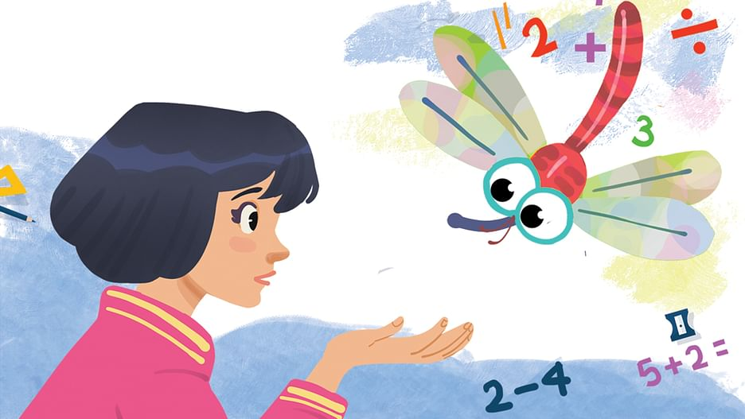

আর একটু বেশি ভালোবাসা
একপক্ষীয় এই কড়া নাড়া প্রমাণ করে, আমার প্রতি তোমার বিন্দুমাত্র আগ্রহ অবশিষ্ট নেই। অনেক দিন পর পর, যখন নিজেকে স্মরণ করতে করতে ক্লান্ত হয়ে পড়ি, মনকে কিছুতেই আর সামলে রাখতে পারি না, তখন নির্লজ্জের মতো লিখি তোমায়, জানতে চাই কেমন আছ? তুমি ছোট্ট করে উত্তর দাও।
আরও পড়ুন
ক্লাসমেট ফড়িং
উড়তে উড়তে জানালার গ্রিলে এসে বসল ফড়িংটা। জানালার পাশেই নদীর পড়ার টেবিল। টেবিলে এলোমেলো বই। ভাগ্যিস, জানালাটা একটু খোলা ছিল। সন্ধ্যা হলেই মশার কথা ভেবে মা সব দরজা–জানালা বন্ধ করে দেন। নদী চুপিচুপি জানালাটা একটু খুলে রেখেছিল। আধবোজা জানালা দিয়ে হাসনাহেনা আর মধুমঞ্জরির ঘ্রাণ আসে ঘরে। সন্ধ্যাটা মাতাল করে রাখে।
আরও পড়ুনরূপকথার গল্প
রূপকথার গল্প শুনতে কার না ভাল লাগে? রূপকথার গল্পের সেই অসাধারন কাহিনিগুলি জড়িয়ে আছে আমাদের ছোট বেলার স্মৃতির সাথে।
আরও পড়ুন